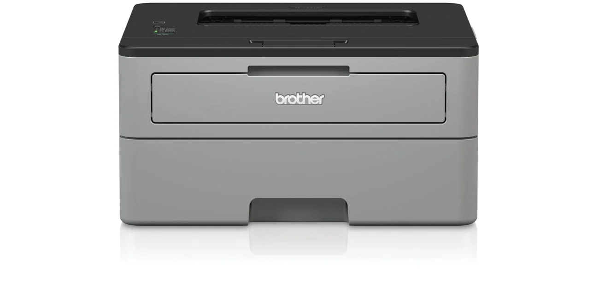
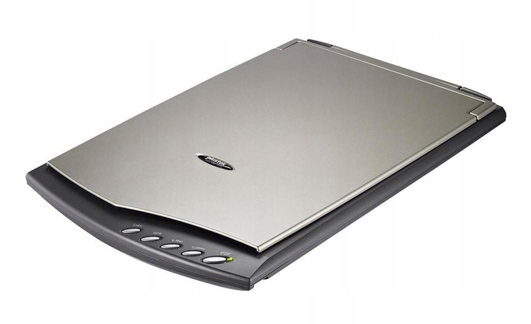

Podłączanie drukarki do komputera. Rodzaje i parametry drukarek oraz skanerów.
Podłączenie drukarki za pomocą WiFi:
- Podłączamy drukarke do sieci bezprzewodowej. Za pomocą wbudowanego systemu menu w drukarce wchodzimy w ustawienia sieci następnie wpisujemy nazwe sieci oraz hasło
- Na komputerze przechodzimy do ustawień systemu Windows. Wybierz urządzenia .
- Wybierz Drukarki i skanery.
- Włącz drukarkę.
- Dodaj drukarkę (po opcji wyszukiwania drukarki wyświetla prawidłową drukarkę).
- Następnie dodaj drukarkę.
Rodzaje drukarek i skanerów:
Drukarki:
- Drukarka atramentowa
- Drukarka laserowa
- Drukarka igłowa / mozaikowa
- Drukarka wierszowa
- Drukarka sublimacyjna / termosublimacyjna
- Drukarka termotransferowa

Skanery:
- skaner ręczny
- skaner płaski
- skaner bębnowy
- skaner do slajdów
- skaner kodów kreskowych
- skaner 3D

Do najważniejszych parametrów drukarek można zaliczyć rodzaj drukarki, rozdzielczość, szybkość druku, miesięczne obciążenie oraz dodatkowe funkcje i wyposażenie drukarki. A najważniejszymi parametrami skanerów sa: rozdzielczość optyczną, rozdzielczość interpolowaną, format skanowanego dokumentu, głębię barwy, interfejs oraz wymiary.